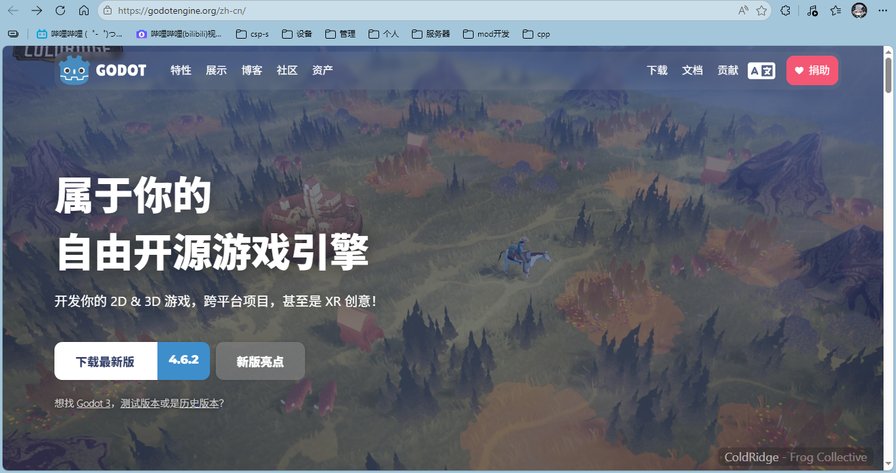
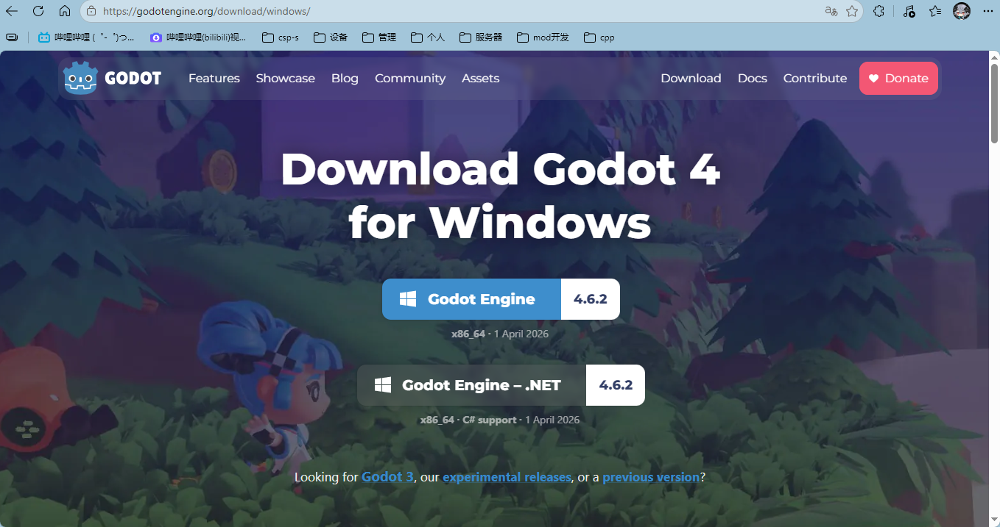
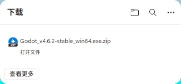
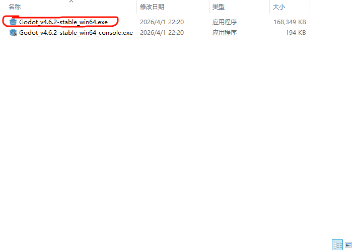
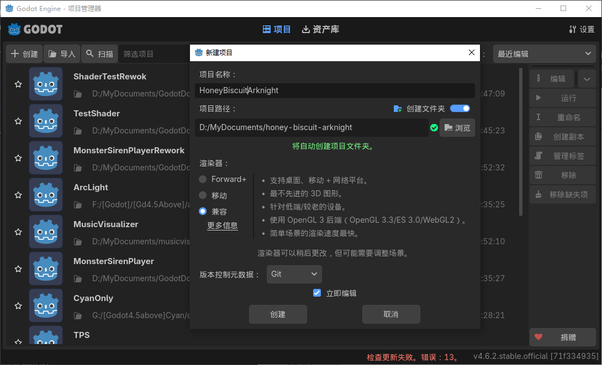
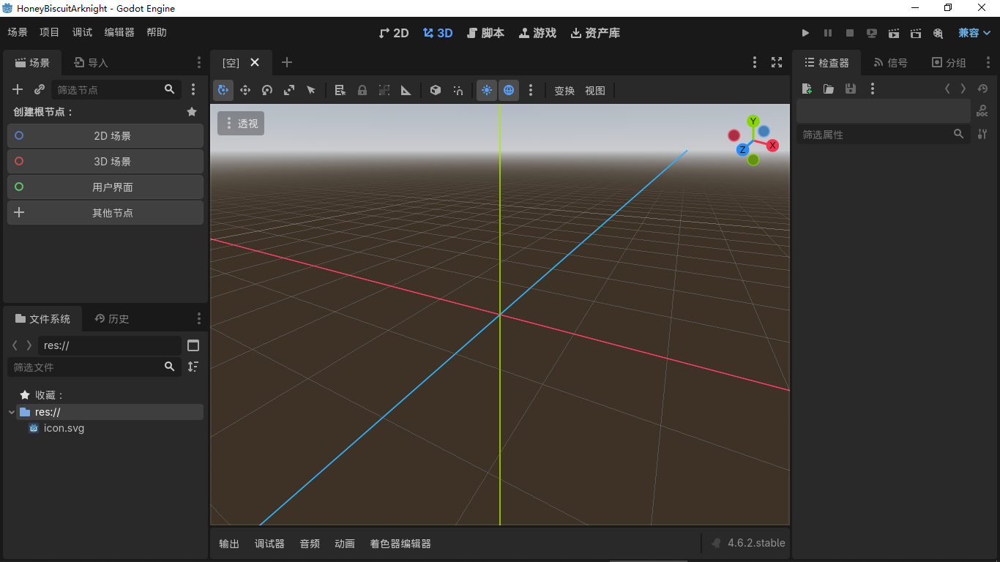
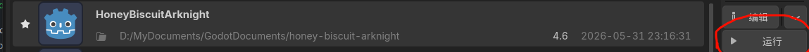
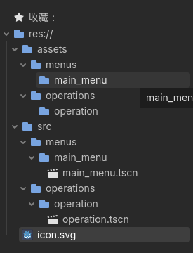
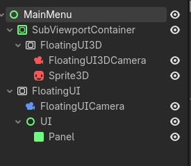

本文将通过项目《溟日纺粥》来简略介绍如何通过godot来创建自己的游戏/视觉小说/二创。
本文目的为激发兴趣及提供入门的指导，若想进行进一步的学习，请自行学习相关知识。 1附：作者本身水平有限，方案实现可能并不好，仅供参考。
当前进度：
可至官方网站https://godotengine.org/zh-cn/进行下载。
目前godot存在两个版本，分别使用gdscript和c#作为使用语言（不过貌似c#版也可使用gdscript）。若只使用gdscript或为初学者则推荐使用gdscript版.（如图2-2）

图2-1 4.6.2版本主页面
图2-2 4.6.2windows下载界面 其中.Net版即为使用c#语言的版本此处编者采用gdscript版作为示例：

图2-3 下载好的压缩包然后解压到一个文件夹中（建议放在桌面或其他容易找的地方，因为这其实就是godot的应用程序了，之后都是用它打开） 之后只需打开那个文件夹打开其中的.exe即可 （也许你注意到还有一个后缀为console的.exe，那其实是godot的命令行版本，godot支持命令行调用，但此处我们用不上）

图2-4 解压出来的应用程序本项目将会在github开源，项目素材来源于明日方舟，从prts.wiki获取，遵守cc by-nc-sa 4.0协议（见页脚）。 本项目的绝大部分机制来源于明日方舟，从prts.wiki获取，遵守cc by-nc-sa 4.0协议（见页脚）。
相关机制可至prts.wiki查看，如作战机制 - PRTS - 玩家共同构筑的明日方舟中文Wiki 和游戏数据基础 - PRTS - 玩家共同构筑的明日方舟中文Wiki
当你打开godot后，默认语言设置应该是你的系统语言，大部分情况下为中文，如果不是可以点击右上角的Settings/设置更改Language/语言选项
点击左上角的创建按钮，便可以创建一个项目（如图3-1）（很不幸，由于电脑配置被判定为超小杯，只能使用兼容模式，实际情况下选移动和forward+更好）

图3-1 密饼，好耶！小刻，desu！然后你大概就会看到这个画面

图3-2 好大的字体之后再次打开godot只需从项目列表里选中即可

图3-3 被烂尾的项目吓哭也许你会问：不会代码怎么办，怎么直接开始实现逻辑了。 问的好，其实我也不知道为啥是这个结构（）
当然这一节主要是根据wiki上的属性，转换成项目中的代码等等，可以考虑先跳过这一节，等后续章节提到相关机制再回来看即可（也许我会写个链接）
（其实这一节是边做后面边写的）
首先，项目分为几个主场景/Scenes，分别是MainMenu，Operation，（TODO） 我们可以先在项目中创建好对应的文件夹和场景

图4-1 创建好的结构1显然，想要一个游戏可以玩，至少得有一个能够使用的ui。
本项目关于ui的设计，大多参考明日方舟自身的设计。
首先，我们便可以注意到明日方舟主界面的ui是一个可以晃动的ui，我们立刻想到使用godot的viewport节点来进行一个trick，方便我们不用手动计算偏移（虽然会很屎山，但效果好） 结构大致如图。

图4-2 后续会微调结构以达到效果，并且会使用代码进行计算角度，好像也不是很方便（